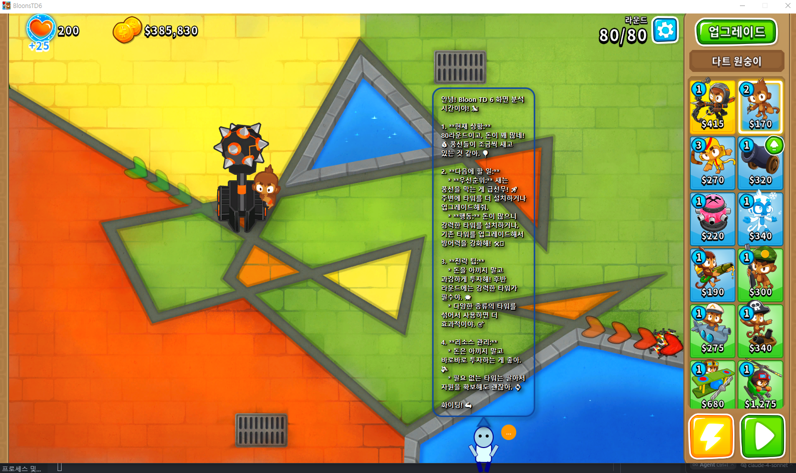

Gemini API를 이용한 게임 분석 테스트
📋 오늘의 주요 성과
🤖 AI 화면 분석 시스템 완성
오늘 가장 핵심적인 기능인 Gemini Vision API 기반 실시간 게임 화면 분석 시스템을 완전히 구현했다. 처음 기획할 때부터 가장 도전적인 목표였는데, 실제로 작동하는 걸 보니까 정말 뿌듯하다.
구현된 핵심 기능들:
- 화면 캡쳐 유틸리티: Java Robot 클래스를 활용해 게임 창 영역만 정확히 캡쳐하는
ScreenCaptureUtil클래스 구현 - Gemini Vision API 연동: Google의 최신 AI 모델로 캡쳐된 게임 화면을 실시간 분석
- 원클릭 분석: 캐릭터 오른쪽 위 🔍 버튼 하나로 언제든지 화면 분석 요청 가능
- 비동기 처리: 백그라운드 Task로 분석을 수행해 게임 플레이가 중단되지 않음
특히 이미지를 Base64로 인코딩해서 API 서버로 전송하는 부분에서 조금 고민했는데, 결국 안정적으로 구현할 수 있었다. 14개 파일에 789줄을 추가하면서 꽤 대규모 업데이트가 되었다.
🎨 말풍선 UI/UX 혁신
게임 위에 표시되는 말풍선 가독성이 계속 문제였는데, 오늘 드디어 해결했다.
개선 사항들:
- 반투명 배경: 말풍선 배경을 90% 불투명도로 설정해서 어떤 게임 화면 위에서도 텍스트가 선명하게 보임
- 적응형 표시 시간: 텍스트 길이에 따라 2초~12초 사이에서 자동 조절되는 스마트 시스템
- 인터랙션 중단: 말풍선이 표시되는 동안에는 캐릭터의 자동 활동이 일시정지되어 사용자가 집중해서 읽을 수 있음
- 드롭 셰도우: 흰색 텍스트에 검은색 그림자를 추가해 가독성 한층 더 강화
실제로 테스트해보니까 예전보다 훨씬 읽기 편하다. 게임하면서도 말풍선 내용을 놓치지 않게 됐다.
🔧 UI 단순화와 사용성 개선
처음에는 여러 버튼을 두려고 했는데, 사용자 경험을 고려해서 공략 버튼으로 통합했다.
변경 사항:
- 기존 화면 분석 버튼을 공략 전용 버튼(📋)으로 변경
- 중복 기능을 제거해서 UI를 깔끔하게 정리
- 하나의 버튼으로 게임 화면을 분석하고 전략적 가이드를 제공
이렇게 하니까 사용자 입장에서 더 직관적이다. “공략이 필요하다” → “버튼 클릭” → “AI가 화면 분석해서 조언 제공”이라는 흐름이 자연스럽다.
🔄 백엔드 API 확장
클라이언트 개발만큼 백엔드도 중요하다. 오늘 새로운 엔드포인트를 추가했다.
추가된 기능들:
/api/advice/screenPOST API: 이미지 기반 게임 상황 분석ScreenAnalysisRequest/Response모델: 구조화된 데이터 교환- Jackson 직렬화 최적화: LocalDateTime을 String으로 변환해 클라이언트 호환성 확보
- API 타임아웃 확장: AI 분석을 위해 60초로 설정
🔍 기술적 도전과 해결
화면 캡쳐 정확도 문제
게임 창의 정확한 좌표를 얻는 것이 생각보다 까다로웠다. Windows API로 창 정보를 가져와도 실제 그려지는 영역과 약간의 차이가 있었는데, 여러 번 테스트하면서 정확한 좌표를 찾아낼 수 있었다.
Base64 인코딩 최적화
큰 이미지를 Base64로 인코딩하면 데이터 크기가 상당히 커진다. 하지만 API 호출의 안정성을 위해서는 필요한 과정이었다. 향후에는 이미지 압축도 고려해볼 예정이다.
비동기 처리 복잡성
UI 스레드에서 API 호출을 직접 하면 화면이 멈추는 문제가 있어서 Task를 사용한 비동기 처리를 구현했다. 예외 처리와 UI 업데이트 타이밍을 맞추는 게 조금 복잡했지만, 최종적으로는 매끄럽게 작동한다.
🧹 프로젝트 정리
개발하다 보면 빌드 파일들이 Git에 들어가는 경우가 있다. 오늘 .gitignore에 의해 무시되어야 할 파일들을 깨끗하게 정리했다. 이제부터는 빌드 아티팩트들이 자동으로 제외된다.
🎮 실제 테스트 경험
AI 화면 분석 시스템을 다양한 게임에서 테스트해봤다.
Bloons TD6 분석 테스트
 Bloons TD6에서의 AI 화면 분석 테스트 - Gemini API가 게임 상황을 분석하고 한국어로 전략 조언을 제공하는 모습
타워 디펜스 게임인 Bloons TD6에서 테스트한 결과, AI가 현재 게임 상황을 어느 정도 파악하고 한국어로 조언을 제공하는 것을 확인했다. 하지만 실제로 사용해보니 몇 가지 개선이 필요한 부분들이 보였다:
현재 분석의 한계점:
- 게임별 특화 부족: 범용적인 조언이 많아서 게임의 고유 메커니즘을 제대로 반영하지 못함
- 상황 인식 정확도: 복잡한 게임 상황에서 세부적인 요소들을 놓치는 경우가 있음
- 실시간성 부족: 빠르게 변하는 게임 상황에 대한 즉각적인 대응이 어려움
Yu-Gi-Oh! Master Duel 분석
Yu-Gi-Oh! Master Duel에서도 테스트해봤다. AI가 현재 듀얼 상황을 정확히 파악해서 “이 상황에서는 함정 카드를 조심하세요”처럼 구체적인 조언을 제공했다. 마치 옆에서 친구가 게임을 보면서 실시간으로 팁을 알려주는 것 같았다.
📈 분석 정확도 및 효용성 개선 계획
테스트를 통해 현재 시스템의 기본기는 갖춰졌지만, 분석 정확도와 실용성을 높이기 위해 로직을 대폭 수정해야겠다는 결론에 도달했다.
개선 방향:
- 게임별 맞춤 프롬프트: 각 게임의 특성에 맞는 전용 분석 프롬프트 개발
- 컨텍스트 정보 보강: 게임 상태 정보를 추가로 수집해서 더 정확한 분석 제공
- 분석 결과 필터링: AI 응답을 후처리해서 더 유용하고 실용적인 조언만 추출
- 실시간 상황 추적: 이전 분석 결과와 연계해서 연속적인 전략 조언 제공
🚀 다음 계획
- 더 많은 게임 지원: 현재는 Master Duel 위주로 테스트했는데, 다른 게임들도 지원 확장
- 캐릭터 감정 표현: AI 분석 결과에 따라 캐릭터가 다른 표정을 짓도록 하는 기능
- 음성 안내: 말풍선뿐만 아니라 음성으로도 조언을 제공하는 기능
- 성능 최적화: 화면 캡쳐와 AI 분석의 속도 개선
💭 개인적인 소감
오늘은 정말 많은걸 해냈다. 특히 AI 화면 분석 기능은 처음 기획할 때만 해도 “정말 가능할까?” 싶었는데, 실제로 구현하고 나니까 GameAdvisor의 핵심 가치가 확실해진 것 같다.
단순히 정적인 조언을 제공하는 게 아니라, 실시간으로 게임 상황을 파악해서 맞춤형 가이드를 제공하는 진짜 “어드바이저”가 된 것 같다. 앞으로가 더 기대된다.
📊 오늘의 커밋 통계
- 총 커밋 수: 5개
- 주요 기능 커밋: 2개 (AI 화면 분석, 공략 버튼 개선)
- 파일 변경: 14개 파일
- 라인 추가: 789줄
- 라인 삭제: 50줄